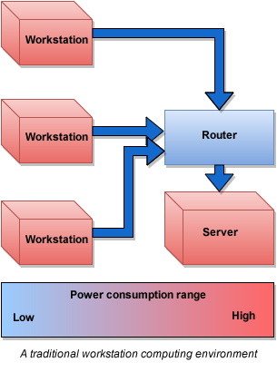
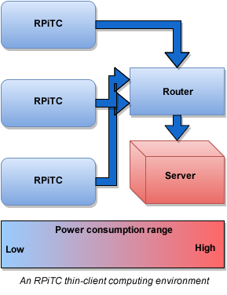

New to the Raspberry Pi? Start here.
VIDEO
Introduction and overview of the Raspberry Pi
New to Virtualization? Start here.
What is Virtualization?
Typical work environments still rely on traditional workstation /server computing environments in which files are stored on a company server and each worker uses a workstation to access and change those files.
In this scenario, the workstations do the computing, and the file server acts as a storage receptacle for files. This structure is inefficient, placing power-hungry workstations at every desk and creating a high degree of unused computing overhead on the server side.

Virtualization refers to the process of abstracting and presenting a virtual representation of computer hardware .
In our thin-client environment, this is done in order to allow a centralized server (called a hypervisor ) to simultaneously divide its heavy computing power between multiple external, low-power thin clients, each of which interacts with the virtual hardware allocated to it.
This structure allows the server to run all of the computing tasks, consuming previously unused overhead, and allows the client to maintain a passive, low-power presence.
This also centralizes and organizes the computing needs of an organization, allowing for accurate scaling according to actual rather than projected needs. It is a very efficient way to provide computing resources to an organization

Why RPiTC2?
The Raspberry Pi leverages the low cost and low power consumption of ARM-processor -based mobile phone platforms and reconfigures them into a small-footprint, general-purpose computer appropriate for experimentation and prototyping. Until now, the problem has been that although the Pi is powerful, it cannot efficiently run fully-featured operating systems with memory-hungry GUI s. The Raspberry Pi Thin-Client Project's solution is to use the Raspberry Pi as a thin client, offloading the computing power to a hypervisor.
Note: for the remainder of this discussion and throughout this document, we will refer to the Raspberry Pi as the RPi and the Raspberry Pi Thin-Client Project as RPiTC .
Because the RPi is so inexpensive and RpiTC is free and open-source, the savings over even the least expensive commercially-available thin clients are tremendous. For large enterprises buying in volume, the cost of the RPi is low enough to be considered disposable. For users who need smaller scale deployments, RPis represent the most cost-effective way to move to a thin-client computing environment.
Why KVM?
Currently, the hypervisor market is dominated by a only a handful of commercial offerings. Xen and KVM , by contrast, are open-source hypervisors that are nearly as fully-featured as commercial equivalents offered by VMWare and Microsoft . For organizations running critical systems, enterprise-level support contracts are available from Citrix , Xen's parent company. For those who do not need support contracts, the product is free. KVM, by contrast, does not offer support contracts and is fully open source, developed by the Open Virtualization Alliance . For the limited scope of this project, we have chosen KVM .